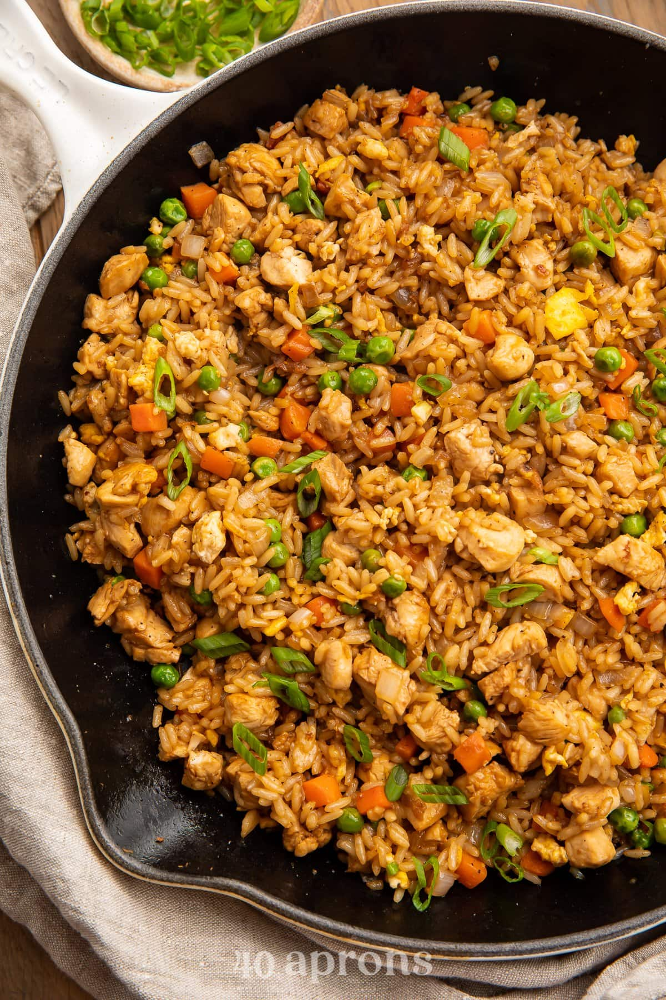
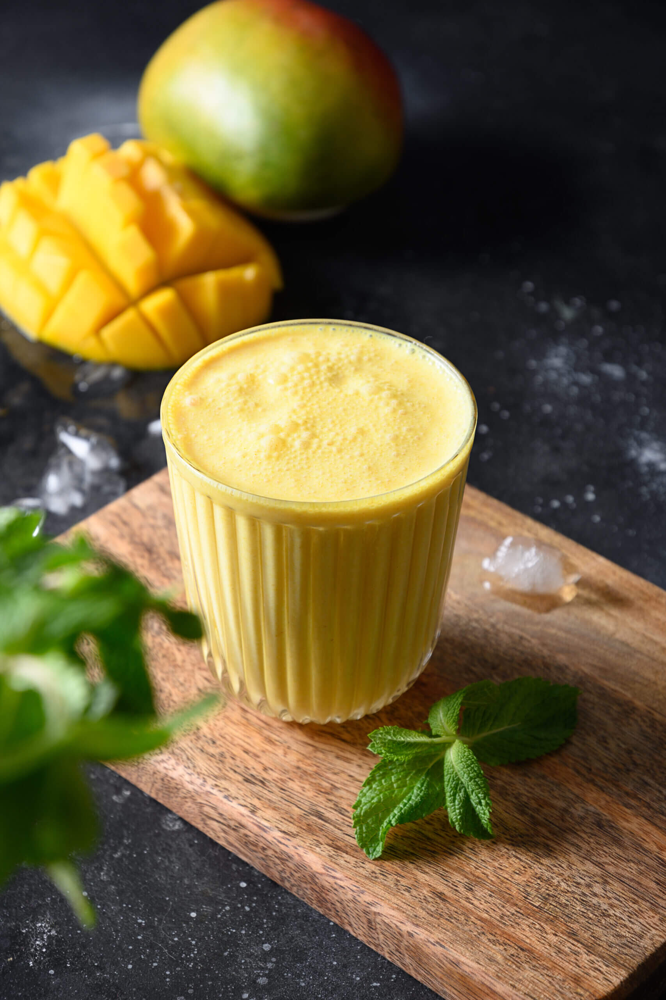

Menu Highlights
Dishes
- chicken-biryani
- chicken-panini
- chicken-friedrice

Chicken biryani is a fragrant and flavorful rice dish that originates from the Indian subcontinent. It features marinated chicken pieces, typically cooked with a blend of spices such as cumin, coriander, cardamom, and saffron, which infuse the rice with rich aromas. The chicken is often seared before being layered with partially cooked basmati rice, creating a perfect balance of tender meat and fluffy grains. Traditionally, biryani is cooked using the "dum" method, where the pot is sealed to trap steam, allowing the flavors to meld together beautifully. It’s usually garnished with fried onions, fresh cilantro, and boiled eggs, and served with raita (a yogurt-based side) or salad. Chicken biryani is loved for its depth of flavor, making it a favorite choice for festive occasions and everyday meals alike.
Price:3000ksh
Chicken panni, also known as chicken panini, is a delicious grilled sandwich that features marinated chicken, often seasoned with spices and herbs, and cooked to perfection. The chicken is typically layered between slices of crusty bread, which can be ciabatta, focaccia, or any artisan bread. The sandwich is usually complemented with ingredients like melted cheese, fresh vegetables (such as lettuce, tomatoes, and onions), and flavorful sauces or spreads like pesto or aioli. The whole sandwich is then pressed and grilled, creating a crispy exterior and warm, juicy filling. Chicken panni is beloved for its satisfying combination of textures and flavors, making it a popular choice for lunch or a light dinner. It's often served with sides like fries or a salad, enhancing the overall meal experience.
Price:2000ksh

Chicken fried rice is a popular Asian dish that features stir-fried rice combined with tender pieces of chicken, colorful vegetables, and savory seasonings. The dish typically starts with cooked rice, which is best when made a day ahead to ensure it’s dry and fluffy. The chicken is usually diced and cooked until golden, then combined with a mix of vegetables such as peas, carrots, and bell peppers. Soy sauce, garlic, and ginger are often added to enhance the flavor, along with a touch of sesame oil for richness. Sometimes, eggs are scrambled into the rice, adding another layer of texture and flavor. Chicken fried rice is not only quick to prepare but also versatile, allowing for variations with different proteins or veggies based on personal preference. It’s a satisfying, one-pan meal that’s beloved for its comforting taste and simplicity.
Price:3500ksh
Beverages
- Masala-chai
- Mango-Lassi
- Nimbu-Pani

Masala chai is a traditional Indian spiced tea that combines black tea with a variety of aromatic spices and herbs. The word "masala" means "spice mix," and "chai" simply means "tea" in Hindi. Typically, masala chai is made by brewing strong black tea with a mixture of spices, which can include cardamom, cinnamon, ginger, cloves, and black pepper. Milk and sweetener, like sugar or honey, are often added, resulting in a rich, flavorful beverage. The spices not only enhance the taste but also offer potential health benefits, such as improving digestion and boosting immunity. Masala chai is enjoyed throughout India and has gained popularity worldwide. It's often served in homes, tea stalls, and cafes, making it a beloved comfort drink for many. Each family or region may have its own unique blend of spices, giving masala chai a personal touch that varies from one preparation to another.
Price:800ksh

Mango lassi is a popular Indian beverage made from ripe mangoes, yogurt, sugar, and sometimes a hint of cardamom. This creamy, refreshing drink is a delightful blend of sweet and tangy flavors, making it a perfect complement to spicy dishes. To prepare mango lassi, ripe mangoes are blended with yogurt until smooth, often with added sugar to enhance sweetness. The drink can be customized with spices like cardamom or a splash of rose water for extra aroma. It’s typically served chilled, making it an ideal treat during hot weather. Mango lassi is not only delicious but also nutritious, thanks to the probiotic benefits of yogurt and the vitamins found in mangoes. It's a favorite choice in Indian cuisine, enjoyed as a cooling accompaniment to meals or as a refreshing standalone drink.
Price:1000ksh
Nimbu pani, also known as Indian lemonade, is a refreshing drink made from freshly squeezed lime or lemon juice, water, and sugar. It’s often seasoned with a pinch of salt and spices, such as roasted cumin powder or black salt, adding a savory twist to the traditional lemonade. This zesty beverage is popular in India, especially during the hot summer months, as it effectively quenches thirst and cools the body. Nimbu pani can be served plain or garnished with fresh mint leaves for an extra burst of flavor. Besides its refreshing taste, nimbu pani is also valued for its potential health benefits, including hydration and a boost of vitamin C. It's a simple yet delightful drink that embodies the vibrant flavors of Indian cuisine, making it a staple at outdoor gatherings and family meals.
Price:1200ksh